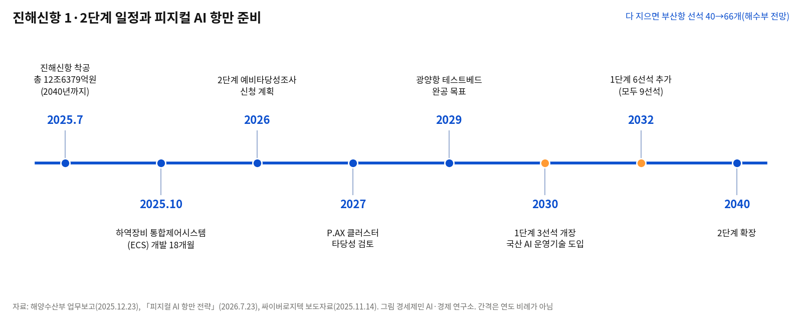
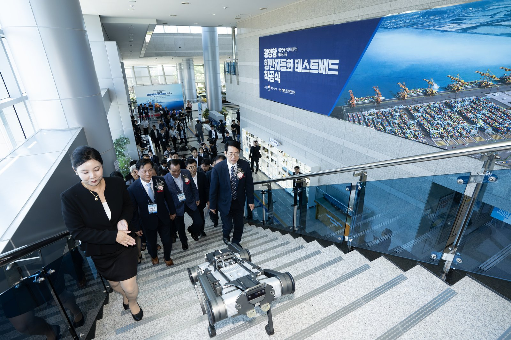
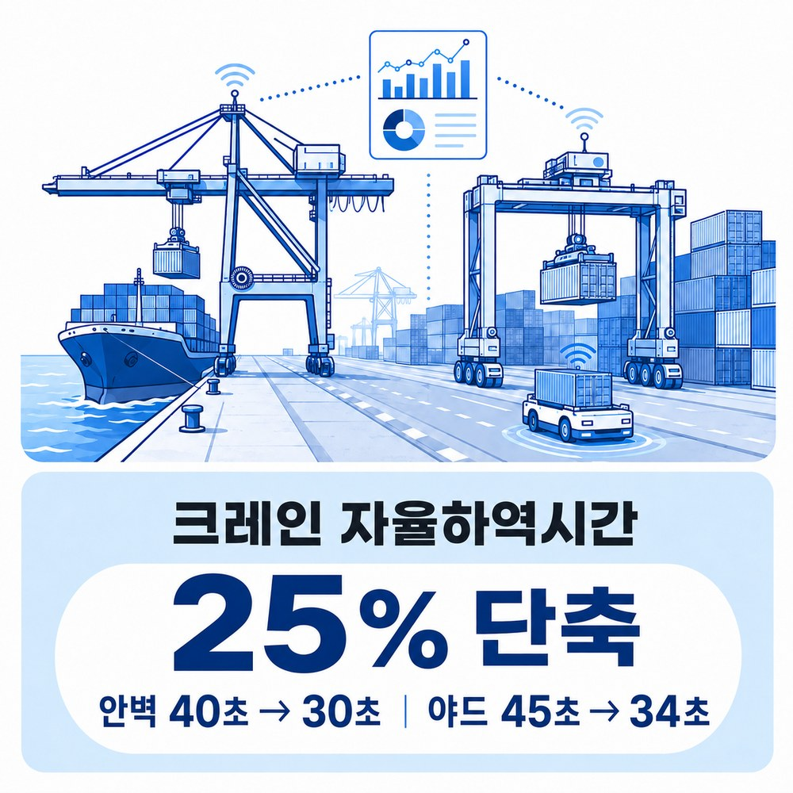

[해양 AI 융복합⑬] 2032년 1단계 9선석 진해신항, 2조원 장비와 단일 운영사로 짜는 피지컬 AI 항만
배후단지엔 제조·항만·물류 잇는 P.AX 클러스터, 2027년 타당성 검토
2022년 논문이 짚은 배후단지 기능 중복
AI경제저널=김갑봉 기자 | 해양수산부가 2026년 7월 부산항 진해신항 1단계를 피지컬 AI 항만 선도 모델로 짓겠다고 밝혔다. 피지컬 AI는 실제 장비를 AI가 스스로 판단해 움직이게 하는 기술이다. 새 항만과 배후단지에 무엇을 얹으려 하는지 사실로 짚는다.
선석 66개를 노리는 부산항
진해신항은 2025년 7월 14일 공사를 시작했다. 2040년까지 컨테이너 부두와 방파제 등에 12조6379억원이 들어간다. 착공 전 마지막 절차인 어업피해 보상 약정은 2025년 7월 11일 체결됐다.
다 지으면 부산항 선석은 40개에서 66개로 늘어 세계 1위가 된다고 해수부는 내다본다. 선석은 배 한 척을 대는 자리다.
1단계는 9선석이다. 2030년 3선석을 먼저 열고 2032년 6선석을 더 열 계획이다. 2단계는 2040년까지 넓힐 계획이다.

해수부는 2025년 12월 업무보고에 2026년 2단계 예비타당성조사 신청을 적었다. 큰 나랏돈 사업을 미리 따져 보는 절차다.
업무보고는 민간 스마트항만 도입을 돕는 하부시설(부두 기초 구조물) 재정투입 확대도 검토한다고 적었다.
운영사 하나에 맡길 진해신항
업무보고 기준 기존 부산항 신항 터미널 운영사는 7곳이다. 해수부는 운영사가 난립해 과당경쟁과 비효율이 생긴다고 본다.
해수부는 기존 신항 운영사들의 점진적 통합을 이끌겠다고 적었다. 통합 수준에 따라 통합 비용 10억~30억원, 장비 스마트화 자금 15억~70억원을 차등 지원하는 안이다.
새로 짓는 진해신항은 단일 대형 운영사가 맡는 구조로 조성한다고 적었다. 국내 완전자동화 항만은 신항 7부두 한 곳뿐이라고 업무보고는 보완점으로 짚었다.
업무보고는 7부두 운영 경험을 살려 광양항을 시범항만으로 삼고, 2030년부터 국산 AI 운영기술을 진해신항에 들인다고 적었다. 2026년 7월 피지컬 AI 항만 전략은 광양항 테스트베드 완공 목표를 2029년으로 잡았다.

이 전략에는 고위험 작업 무인화 기술도 들어 있다. 컨테이너 고정장치 묶고 풀기와 줄잡이(배를 부두에 묶고 푸는 일)다. 전략은 노·사·정 협의체를 꾸려 단계적으로 전환하겠다고 적었다.
2조원 하역장비와 소버린 AI
해수부는 진해신항 1단계에 약 2조원어치 스마트 하역장비가 들어간다고 본다. 컨테이너를 배에 싣거나 배에서 내려 야드로 옮기는 크레인과 운반차다.
7월 전략은 1단계 사업으로 약 2조5000억원 규모 기술 시장이 생긴다고 내다봤다. 자율형 하역장비와 소버린 AI 운영시스템 등이다.
해수부 풀이로 소버린 AI는 국가가 데이터와 AI 기술 주권을 쥐고 독립적으로 운영하는 시스템이다.
싸이버로지텍은 2025년 11월 13일 진해신항 하역장비 통합제어시스템(ECS) 설계·시제품 개발 착수를 발표했다. 부산항만공사의 18개월 용역으로, 이 회사가 이끄는 컨소시엄이 2025년 10월 맡았다고 회사는 밝혔다.
ECS는 자동화 하역장비를 한 체계로 잇고 AI로 작업 일정을 짜는 시스템이다. 회사 대변인은 신항 7부두에서 보듯 하역장비와 터미널 운영 프로그램을 매끄럽게 잇는 일이 핵심이라고 밝혔다.
해수부는 2026년 10월 28일 해양수산 AX(AI 전환) 전략에서 항만 전반에 장비 사이 조정을 AI가 맡는 에이전틱 AI 플랫폼을 개발하겠다고 밝혔다. 에이전틱 AI는 목표를 받아 여러 단계 작업을 스스로 해내는 AI다.

데이터 플랫폼과 신항 실증
7월 전략은 기존 부산항 신항 터미널과 바다·육지·하늘 물류 상황을 실시간으로 잇는 시스템도 단계적으로 갖춘다고 적었다. 장비·물류 데이터는 해양수산 빅데이터 플랫폼에 쌓아 AI 학습에 내주겠다고 했다.
배후단지는 항만 바로 뒤에 물류·제조 시설을 모은 땅이다. 항만 배후단지에 쓸 항만 특화 AI 데이터센터도 검토한다. 어느 항만인지는 적지 않았다.
부산시는 2026년 8월 산업통상부 자율주행 기반 스마트항만 모빌리티 플랫폼 기술개발 공모에 뽑혔다.
사업비는 2029년까지 454억6000만원이고 국비가 200억원이다. 한국자동차연구원과 부산항만공사가 총괄하고 신항 동원글로벌터미널부산 일원에서 실증한다.
과제는 작업자와 장비, 자율이동로봇이 서로 위치를 알아보는 안전 플랫폼을 국산화하고, 24시간 무인 운용을 위한 전동화 자율이동로봇 기술도 개발할 계획이다. 싸이버로지텍도 참여기업이다.
P.AX 클러스터와 배후단지 기능 중복
7월 전략은 아직 조성 전인 진해신항 배후단지에 조선·방산·항만장비 같은 수출 제조기업 유치를 검토한다.
전략은 제조·항만·물류를 잇는 이 구상을 P.AX(Port AX) 클러스터라 이름 붙였다. 해수부는 2027년 타당성 검토로 기본계획과 재원, 기업 유치 방안을 구체화하겠다고 적었다.
이태휘 당시 경상국립대 부교수는 2022년 논문에서 배후단지 제조기업 유치를 다뤘다. 해수부가 입주 조건을 완화하고 있지만 제조기업 유치는 고전하고 있다는 것이다.
까닭으로는 국내 공장의 해외 이전 등을 들었다. 배후단지에 제조기업을 들이자는 주장이 결국 산업단지로 만들자는 주장과 다르지 않다고도 짚었다.
이 교수 분석으로 배후단지는 산업단지, 보세공장과 기능이 겹친다. 보세공장은 관세 부과를 미룬 채 외국 물품을 원료로 가공하는 공장이다. 논문은 배후단지 정책이 도입된 지 20년 가까이 지났지만 가시적 성과를 내지 못했다고 진단했다.
전략은 배후단지를 피지컬 AI 실증·확산·산업화 거점으로 삼겠다고 적었다.
참고문헌
- 해양수산부, 「진해신항 개발을 위한 어업보상 약정 체결 완료」, 2025년 7월 15일(등록 7월 11일). https://www.mof.go.kr/doc/ko/selectDoc.do?docSeq=62291&bbsSeq=10&menuSeq=971
- 해양수산부, 「해양수산부 업무보고」, 2025년 12월 23일. https://www.mof.go.kr/2026briefing/main/2026_bodo.pdf
- 해양수산부, 「항만이 '하나의 거대한 지능형 로봇'으로, 피지컬 AI 항만혁신 본격 추진」, 2026년 7월 23일. https://www.mof.go.kr/doc/ko/selectDoc.do?docSeq=67543&bbsSeq=10&menuSeq=971
- 해양수산부, 「해양수산 분야 인공지능 전환(AX)으로 바다의 가치를 혁신한다」, 2026년 10월 28일. https://www.mof.go.kr/doc/ko/selectDoc.do?docSeq=69135&bbsSeq=10&menuSeq=971
- 부산광역시, 「부산시, 산업부 '자율주행 기반 스마트항만 모빌리티 플랫폼 기술개발' 공모 최종 선정」, 2026년 8월 13일. https://www.busan.go.kr/nbtnewsBU/1749032
- 싸이버로지텍(CyberLogitec) 보도자료, "CyberLogitec launches development of ECS and digital twin platform for Jinhae New Port's AI-driven mega terminal", 2025년 11월 14일 배포. https://kyodonewsprwire.jp/release/202511149132
- 이태휘, 「항만배후단지 부가가치 창출 미비의 원인 분석과 제언」, 『한국항만경제학회지』 제38집 제4호, 한국항만경제학회, 2022년 12월, 1~11쪽. https://doi.org/10.38121/kpea.2022.12.38.4.1
[사진·도표 출처]
- [사진1] 해양수산부 사진뉴스, 「[포토뉴스] 광양항에서 '항만자동화 시험장' 구축사업 착공식 개최」, 2026년 7월 31일 게시(원 파일 DSC09321), 공공기관 자료(출처 표시), https://www.mof.go.kr/doc/ko/selectDoc.do?docSeq=67726&bbsSeq=15&menuSeq=381
- [도표1] 경세제민 AI·경제 연구소 작성. 자료 해양수산부 업무보고(2025.12.23), 「피지컬 AI 항만 전략」(2026.7.23), 싸이버로지텍 보도자료(2025.11.14)
- [도표2] 해양수산부, 「해양수산 분야 인공지능 전환(AX)으로 바다의 가치를 혁신한다」 보도자료(hwpx) 「참고」 표 항만·물류 목표 그림, 2026년 10월 28일, 공공기관 자료(출처 표시), https://www.mof.go.kr/doc/ko/selectDoc.do?docSeq=69135&bbsSeq=10&menuSeq=971
※ 이 기사는 AI 프로그램 클로드를 활용해 작성했습니다.
관련기사
- [해양 AI 융복합⑫] 실증·인증 한데 모을 광양 첨단항만기술원 구상, 2027년 타당성 검토 앞둔 입지 논쟁
- [해양 AI 융복합⑪] 2028년 완전자동화 부두 앞둔 인천 신항, 크레인은 중국산·운영 프로그램은 국산
- [해양 AI 융복합⑩] 부두 하나서 효율 17% 올린 디지털 트윈, 부산항 전체로 넓히는 388억원 계획
- [해양 AI 융복합③] 부산항만공사, 국내 첫 'AI 항만' 전환 계획 내놨다
저작권자 © AI경제저널 무단전재 및 재배포, AI학습 및 활용 금지